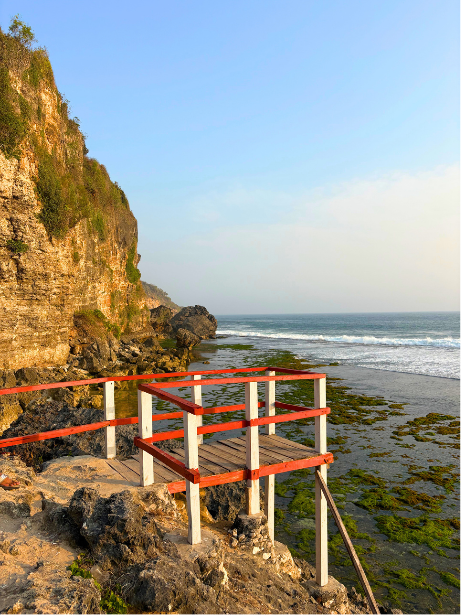
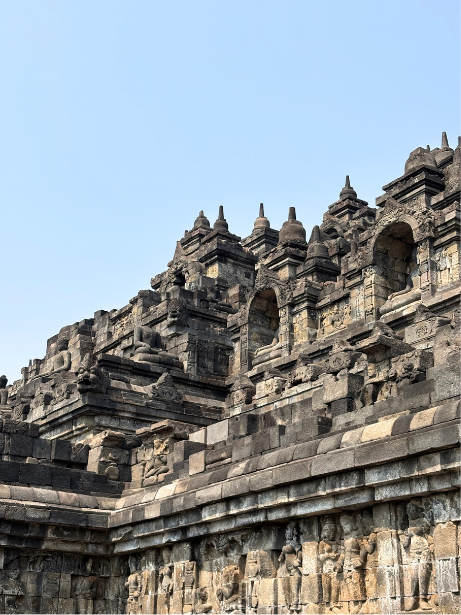
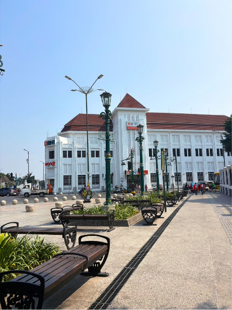
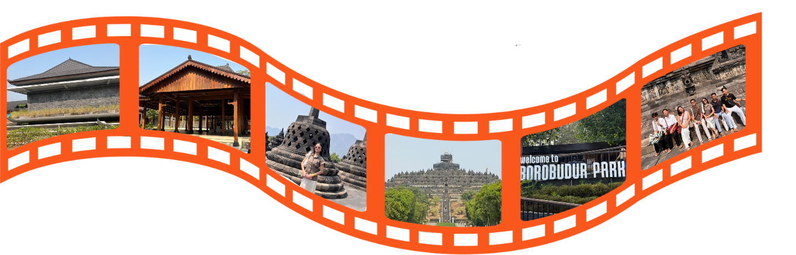
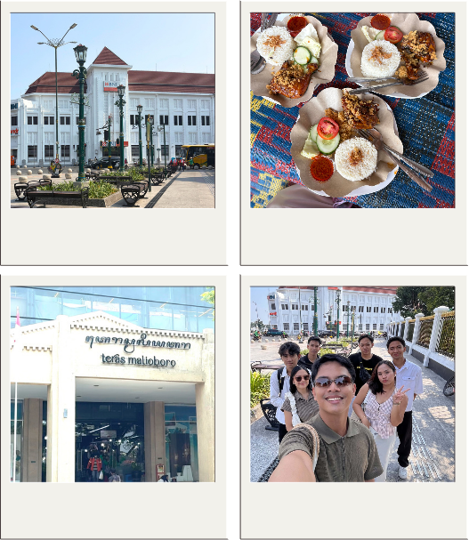

Borobudur Temple, Magelang, Central Java
During the second week of our stay in Indonesia, the UPGRIS International Affairs Office organized a city tour for all SEA-Teacher participants. The journey by car was enjoyable as we shared stories, took photos, and admired the beautiful scenery along the way.
As soon as I entered Celosia, I was completely amazed. The colorful flower gardens, unique attractions, and breathtaking views made the place feel magical. Truly, I can say that Celosia is the Disneyland of Indonesia. Among all the places I visited during my stay, it was one of the most beautiful places I have ever been in my life.
Together with my fellow SEA-Teacher participants, we explored different attractions, tried various rides, and captured countless photographs around the park. One of the most memorable experiences I had was riding the Rainbow Slide. Although I felt nervous at first, the excitement and laughter I experienced while sliding from the top all the way down made it one of the highlights of my Indonesia journey.
More than its beauty, Celosia became memorable because of the moments we shared together. It was a day filled with laughter, adventure, and unforgettable memories that I will always treasure.

Malioboro Street, Yogyakarta
After visiting Borobudur, we headed to Malioboro Street, one of the most famous tourist destinations in Yogyakarta. The area is known for its lively atmosphere, local shops, street food, cultural products, and souvenir stores.
We had lunch together before exploring the streets. We also visited a souvenir shop where we bought clothes, snacks, and gifts to bring home to the Philippines. One of the highlights was taking photos at the iconic white BNI Building, a well-known landmark often visited by tourists. Walking through Malioboro allowed us to experience the vibrant culture and everyday life of Yogyakarta.

Pantai Ngrumput, Yogyakarta
Our final destination was Pantai Ngrumput, a hidden beach located in Gunungkidul, Yogyakarta. Although it was the farthest destination of the day, every minute of the journey was worth it.
Upon arriving, we had to walk down a long path before the beach finally revealed itself like a hidden gem. The sight of the crashing waves, rocky cliffs, golden sand, and breathtaking ocean view immediately captured my attention. The beach felt peaceful and untouched, making it one of the most beautiful places I visited during my stay in Indonesia.
As the sun slowly began to set, the entire beach was covered in warm golden light. We enjoyed walking along the shore, taking photos, and simply appreciating the beauty of nature. We also had dinner by the beach and I tried a freshly picked coconut, which made the experience even more memorable.
The whole-day trip was tiring, but every destination, every view, and every memory made the journey worthwhile. It was a perfect way to end my SEA-Teacher adventure in Indonesia and a reminder that some of the most unforgettable experiences happen when you step outside your comfort zone and explore the world around you.